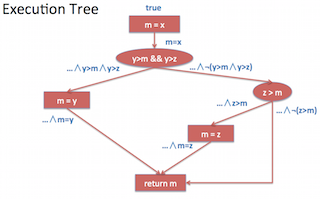
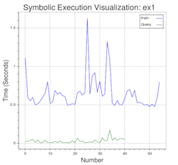
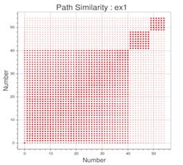

Dynamic Symbolic Execution with Pathgrind
In this article, we will learn about the technique of dynamic symbolic execution and how it can be used for testing and fuzzing binaries. In two previous articles (1,2), we already saw how automated methods can be used for test case generation in Java. Dynamic symbolic execution is an automated approach to generating new test cases based on constraints that are collected from an execution trace. For this article, we will use the Pathgrind tool. Pathgrind is a symbolic execution engine which can be used for automated fuzzing of 32-bit binaries on Linux. Before we jump in, let us first start with some background about symbolic execution.
Symbolic Execution
Wikipedia defines symbolic execution as "the means of analyzing a program to determine what inputs cause each part of the program to execute". The basic idea behind symbolic execution can be explained by the following steps:
- Execute the program with a given input
- Build a symbolic formula during execution which captures the path taken by the input through the program
- Minimally change the formula to create a new formula
- Solve the new formula to generate another input to the program
- Repeat the steps by executing the program with the new input
As an example, let us consider the following max method.
int max (int x, int y, int z) {
int m = x;
if(y>m && y>z)
m = y;
else if(z>m)
m = z;
return m;
}The method takes as input, three integer values and returns the maximum value among the three. So, calling the method with the input max(1,3,2) return 3 as the maximum value. While executing the method we can build the following symbolic formula which captures the path taken by the input through the program. This symbolic formula is also referred to as the path condition (PC).
Statement Formula
inputs : x0, y0, z0
int m = x; true
if(y>m && y>z) m0 = x0
m = y; m0 = x0 /\ y0 > m0 /\ y0 > z0
else if(z>m) m0 = x0 /\ y0 > m0 /\ y0 > z0 /\ m1 = y0
m = z;
return m; output: m1In the beginning, the execution starts with the symbolic formula true and then continuing for each statement in the program we add a constraint to the formula. Thus, the path condition for the given input (1,3,2) is m0 = x0 /\ y0 > m0 /\ y0 > z0 /\ m1 = y0. After eliminating m0 and substituting the value of m1 in the formula we get y0 > x0 /\ y0 > z0 /\ 3 = y0. This formula captures the path taken by the program for the given input. Now, in order to mutate the formula there are several possibilities: we can negate a particular constraint in the conjunction or we can drop a constraint from the conjunction altogether. For this example let us just negate the first constraint. We get an another formula y0 <= x0 /\ y0 > z0 /\ 3 = y0, and we need to check if this formula is satisfiable. This can be done using a number of existing constraint solvers (like STP) or SMT solvers (like z3). The solver tells if the formula is unsatisfiable, or in case the formula is satisfiable it returns the values of the variables in the formula that make the formula valid. For our new path condition y0 <= x0 /\ y0 > z0 /\ 3 = y0, the solver gives the following values for variables x0,y0 and z0.
x0 = 3
y0 = 2
z0 = 2We can now repeat the same process with these new inputs and carry on the symbolic execution of the program one path at a time. This kind of symbolic path exploration can be visualized with the following execution tree for the max method.

Each input that is discovered leads to covering of another subsequent path in the tree. In this case, there are only 3 distinct paths in the program, so just 3 path conditions are required to explore all the paths in the program. For methods without loops or recursion the path exploration is always finite and terminating. However, in general in the presence of loops and recursion a program may potentially have unbounded number of paths. Exploring a program by exhaustively testing all paths in the program can lead to exponential number of test cases. This problem is commonly referred as path explosion, and is one of the limitations of symbolic execution. In order address this limitation, most tools support setting up a fixed depth until which the execution tree is explored and the path exploration process terminates after that depth. A similar strategy is used in pathgrind which we will look at in the next section.
Pathgrind
Pathgrind is a symbolic execution engine based on Valgrind that uses STP for solving constraints. It can be used to fuzz 32-bit binaries on Linux. The installation is fairly simple and detailed in the README.md file on GitHub. Once installed, you need to edit the settings.cfg file to include the following for each program you want to fuzz.
[test]
prog = testcase/test.exe
input = input.txt
max_bound = 100The prog parameter specifies the path to the binary and the input parameter gives the file to use for the initial input to start the symbolic execution. It also has an optional max_bound parameter to bound the search during path exploration. By default, pathgrind assumes that the program takes input from a file and generates new files based on symbolic execution to fuzz the program. Once the settings are configured we can just call fuzz.py test to run pathgrind on input configured with test section in the settings.cfg file.
user@user-VM:~/git/pathgrind$ ./fuzz/fuzz.py test
[+] expanding execution with file input.txt
* 4 path constraints (bound: 0)
* solving constraints [0:0]
* new_input (1.txt): bood
* solving constraints [0:1]
* new_input (2.txt): .aod
* solving constraints [0:2]
* new_input (3.txt): ..dd
* solving constraints [0:3]
* new_input (4.txt): ...!
[+] checking each new input
1.txt[-] argument to program is
2.txt[-] argument to program is
3.txt[-] argument to program is
4.txt[-] argument to program is
[+] scoring each new input
[+] expanding execution with file 4.txt
* 4 path constraints (bound: 4)
...
Paths Explored: 15
Time Taken: 10.85The output of running pathgrind is shown above. The execution starts with file input.txt and new inputs (1.txt, 2.txt etc.) are generated by solving the path conditions (constraints). At the end, it also prints the number of paths explored and the total time taken. While fuzzing, pathgrind generates inputs and executes the binary with those inputs in the hope that one of the input will lead to a memory error and a crash that is detected by valgrind. The crash can be further investigated using the output from valgrind to determine the exploitability of the issue. Thus, new bugs or vulnerabilities in the binary can be found in a fully automated manner.
For the simple test program the fuzzing process terminates in a few seconds, but for more realistic programs of interest like a browser (or the libPNG library) the process can take hours or even days to find some interesting case of failure. This is primarily due to problem of path explosion as mentioned earlier. If we want to see the time taken to execute each path condition we need to install bokeh a Python-based framework for data visualization and just use plotfuzz.py test. It will launch the browser and show a running plot of the time taken to solve each formula and the time taken for path exploration (generating new formula).

The green line is the time taken in solving the constraint while the blue line shows the time taken in generating new constraints. As is clear from the graph, the time taken to generate new constraints is much larger than the time taken by the external solver (in this case STP) to solve them. I gave a talk on "Visualizing Symbolic Execution with Bokeh" at PyData Singapore earlier this year on this topic. The slides of the presentation contain more examples on how to visualize some of the issues with path explosion in symbolic execution. For instance, if we implement the path exploration of loops in a naive way we will have lots of paths which are similar to each other that represent the unwinding of the loop. The following scatter plot shows what this looks like.

The size of the dot in the plot depicts the similarity (larger is more similar). All the dots from number 1 to 40 are very similar to each other and represent paths that are not interesting as they come by exploring loop unwinding. Techniques to address such limitations of symbolic execution are beyond the scope of this article and are a topic of active research in this area. With that we have come to the end of this article, more details about how to optimize path exploration with pathgrind can be found in the paper on Exploiting undefined behaviors for efficient symbolic execution. In addition, to learn more about the path conditions, differences between various symbolic execution engines and solvers you can check out the following paper on An Empirical Study of Path Feasibility Queries. If you run into any issues running Pathgrind feel free to submit an issue on the GitHub repo or send in your pull request.